Selecting A Jekyll Theme
Thèmes que j'ai examinés avec mes notes de travail.
Hydejack
Actuel en novembre 2024.
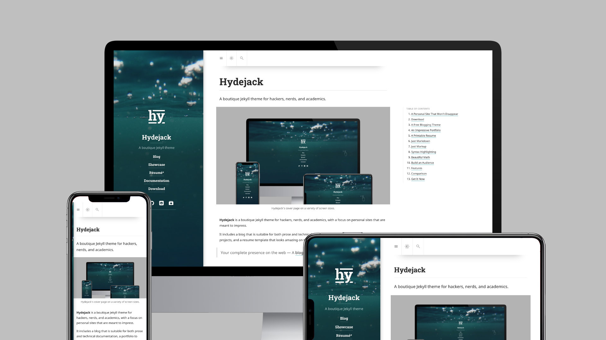
Hydejack est mon thème actuel (en novembre 2024). Il est agréable, mais- Il a trop de gadgets et de fioritures - oui, les goûts changent avec le temps
- J'en ai assez de la page d'entrée que je dois faire glisser vers la gauche
Hyde
En cours d'étude - Candidat le plus prometteur
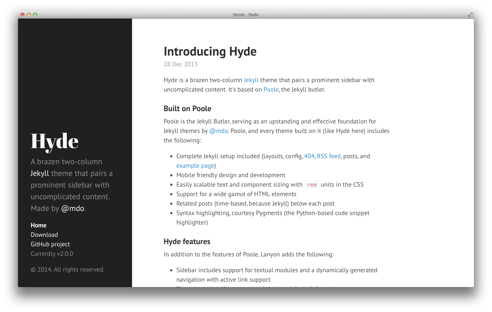
HydeLanyon
En cours d'étude - Candidat prometteur
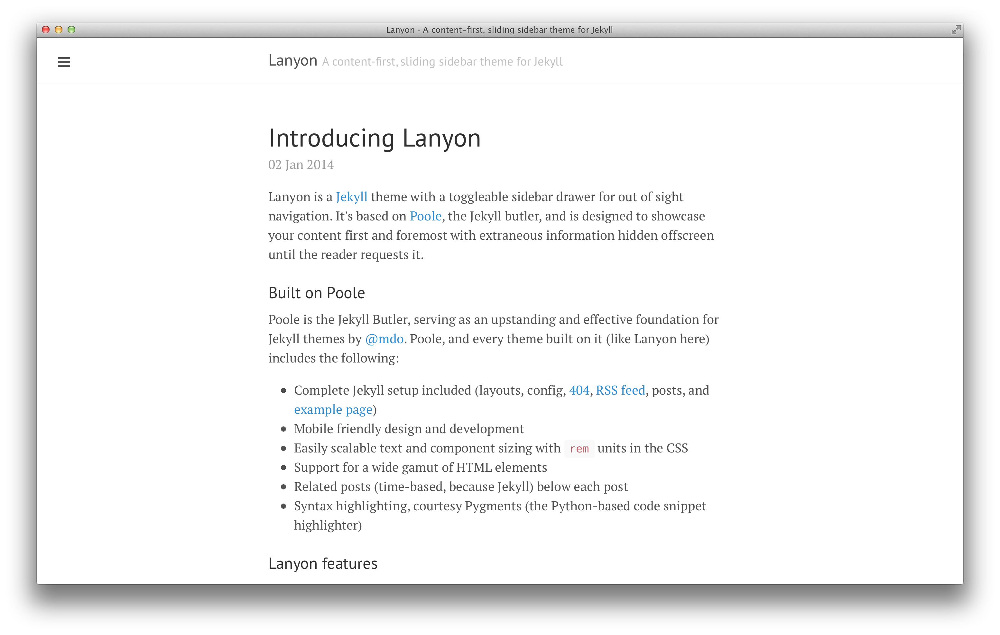
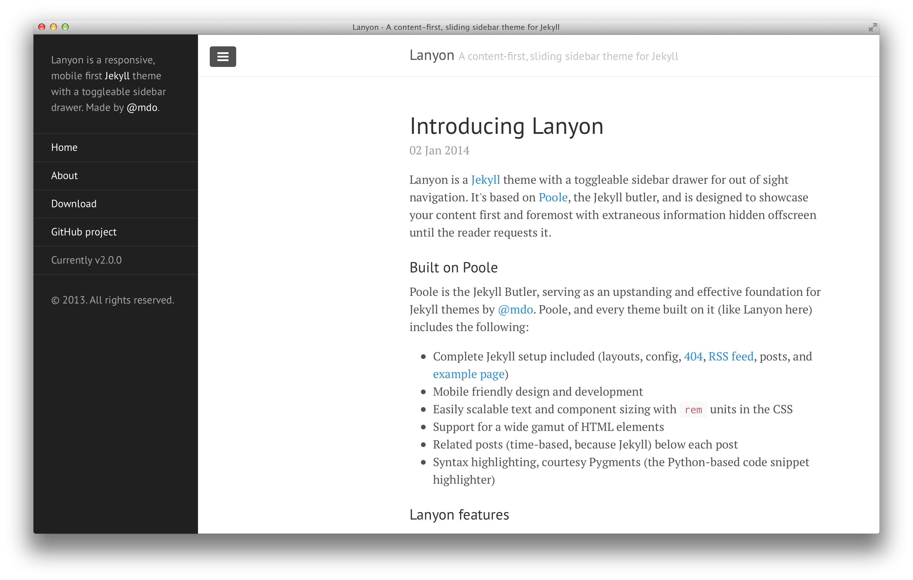
Minimal Theme
En cours d'étude
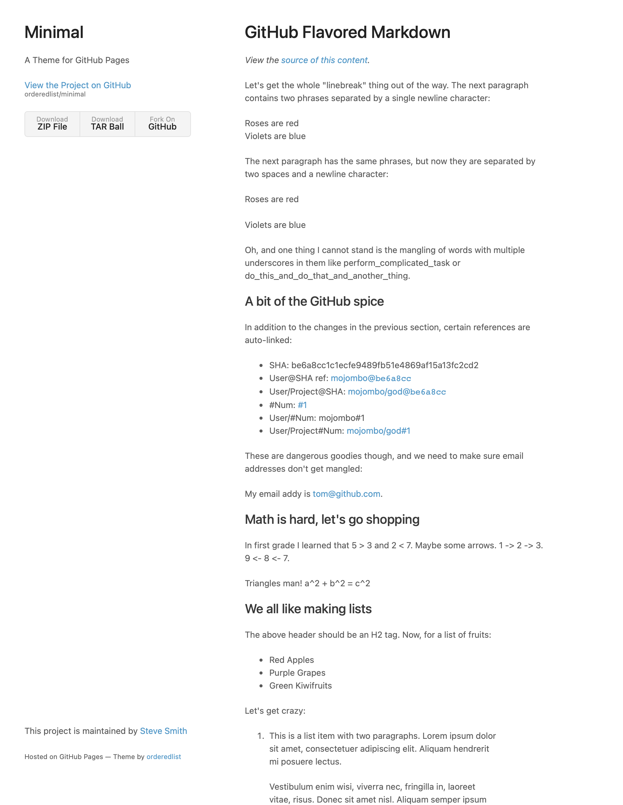
MinimalCayman
En cours d'étude
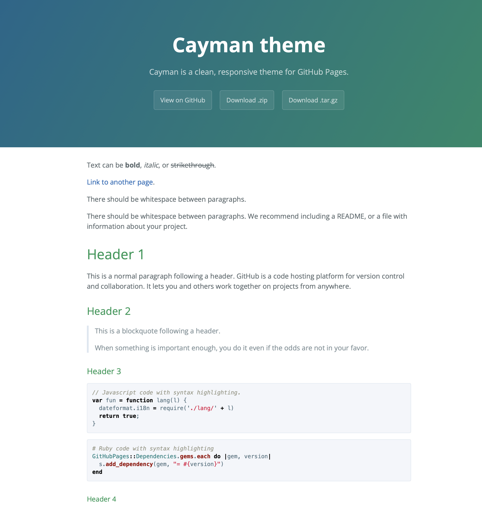
CaysmanPoole
Rejeté car j'ai compris que c'est juste un thème de base. Hyde et Lanyon sont basés dessus.
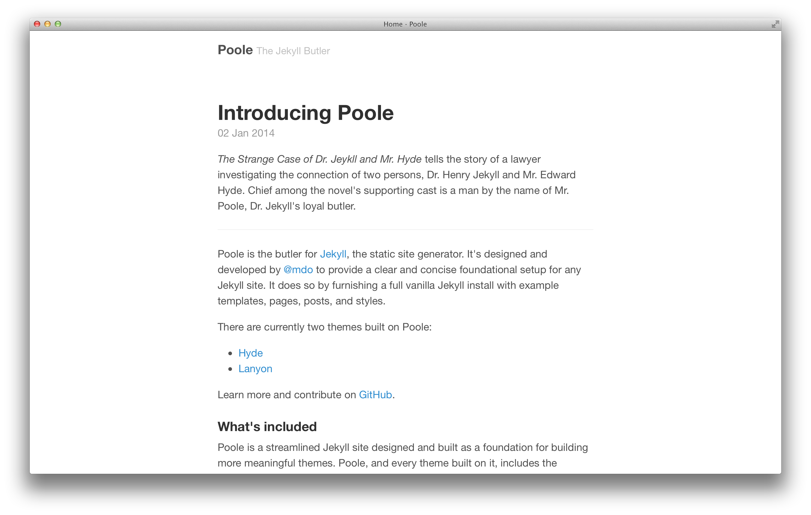
PooleCeleste
En cours d'étude
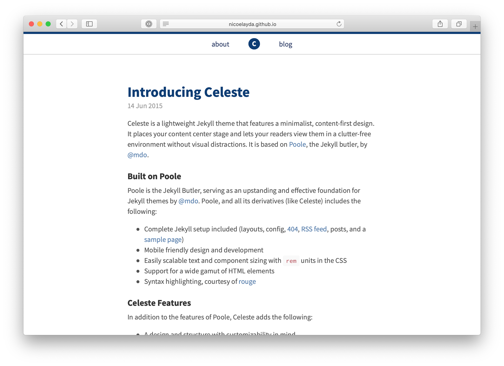
CelesteMinimal Mistakes
En cours d'étude
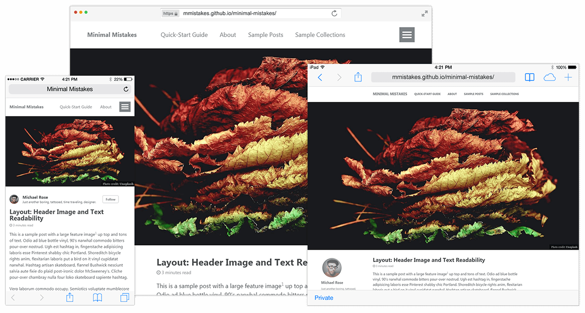
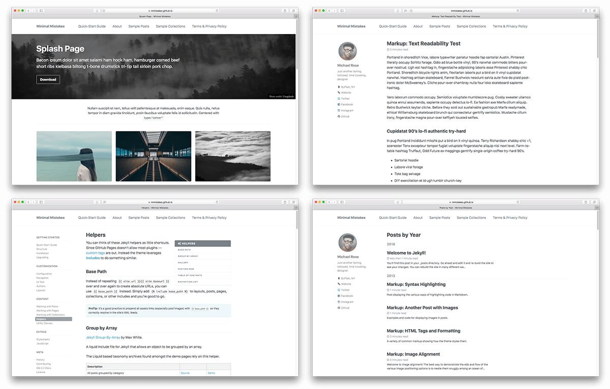

Mediumish
En cours d'étude - probablement trop sophistiqué
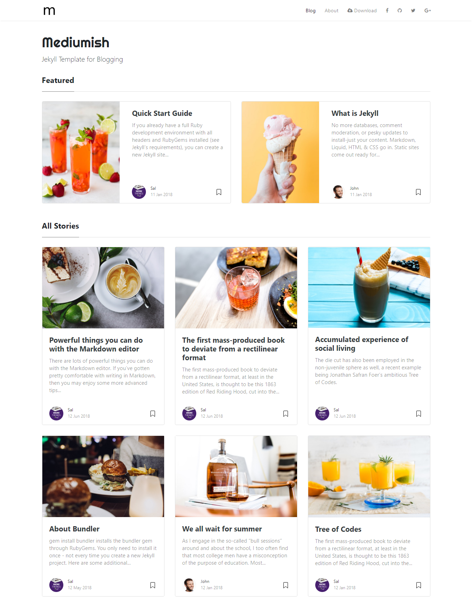
al-folio
Rejeté en raison de sa complexité.
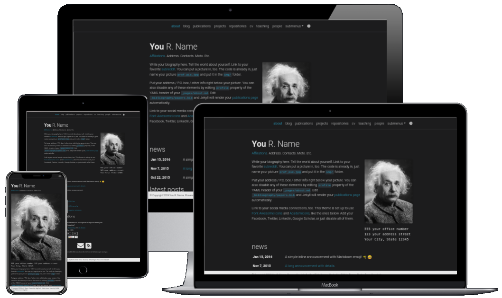
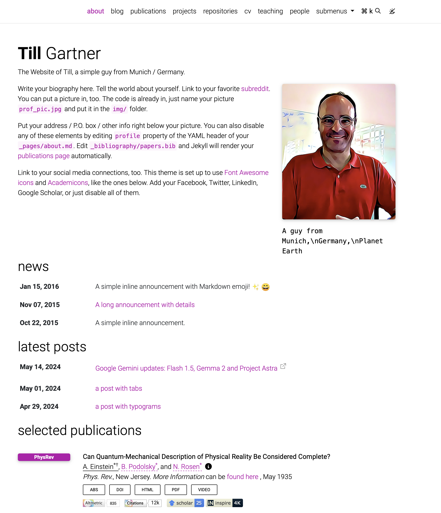
al-folio a une belle apparence - avec l'image d'Einstein. Il est beaucoup moins attrayant avec mon visage, il a trop de zones dont je n'ai pas besoin. J'ai joué avec (c'est-à-dire créé une petite démo personnalisée), et il semble complexe.